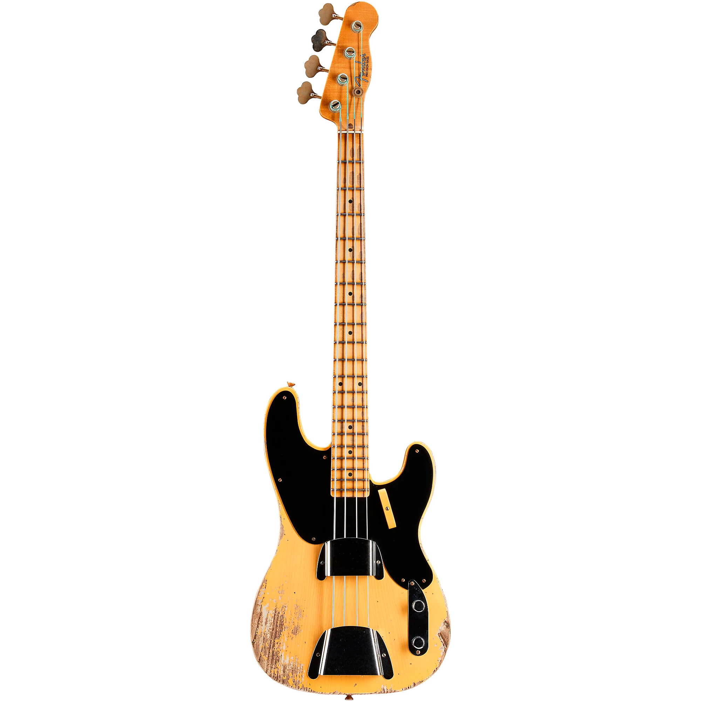
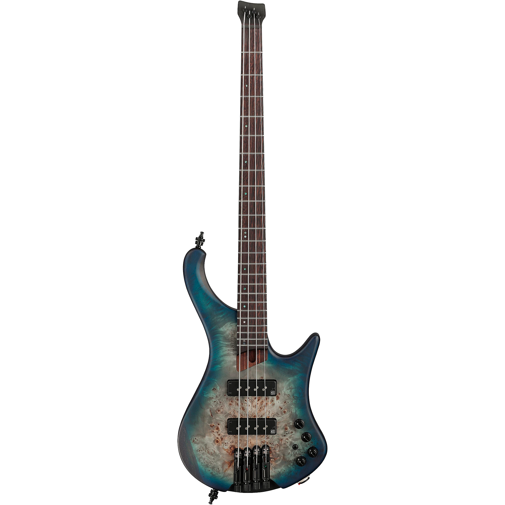

A Deep Dive into the Evolution of the Bass Guitar
Welcome to our exploration of the bass guitar's rich history—a journey that delves into the evolution of one of the most pivotal instruments in modern music. From its inception to its current prominence in various genres, the bass guitar has played a crucial role in shaping the sound of contemporary music.
The Birth of the Bass Guitar
The story of the bass guitar begins in the early 20th century. The roots of the bass guitar can be traced back to the double bass, a staple in orchestras and jazz bands. However, the demand for a more portable and amplified bass sound led to the creation of the electric bass guitar.
In 1951, Leo Fender introduced the Fender Precision Bass, the first commercially successful electric bass guitar. This innovation marked a significant shift in the music world. Unlike the acoustic double bass, the Fender Precision featured a solid body and electronic pickups, offering a louder and more consistent sound that quickly gained popularity among musicians.
The Evolution and Innovation
Following the Fender Precision Bass, other manufacturers began to innovate and expand on the concept. In 1957, the Fender Jazz Bass was introduced, featuring a more versatile tonal range and a contoured body for increased playability. These early bass guitars set the stage for future developments and solidified the instrument's place in various musical genres.
The 1960s and 1970s saw the rise of iconic bass players like James Jamerson, Paul McCartney, and Jaco Pastorius, who pushed the boundaries of what the bass guitar could do. Their contributions helped to define the sound of rock, funk, and jazz, demonstrating the instrument's versatility and expressive potential.
Modern Developments
As technology advanced, so did the bass guitar. The late 20th and early 21st centuries introduced innovations such as active electronics, extended range basses (like 5- and 6-string models), and various materials for both body and neck construction. These advancements have allowed bass players to explore new sonic territories and enhance their performance capabilities.
Today, the bass guitar remains a cornerstone of modern music, from rock and jazz to funk, metal, and beyond. The instrument continues to evolve, with new designs and technologies emerging regularly, but its essential role in providing rhythm, harmony, and depth to musical compositions endures.
